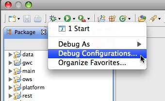
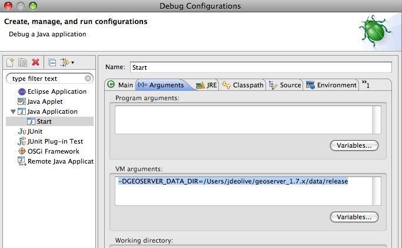
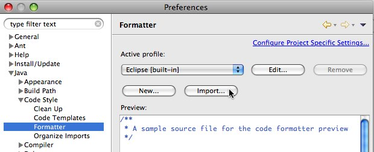
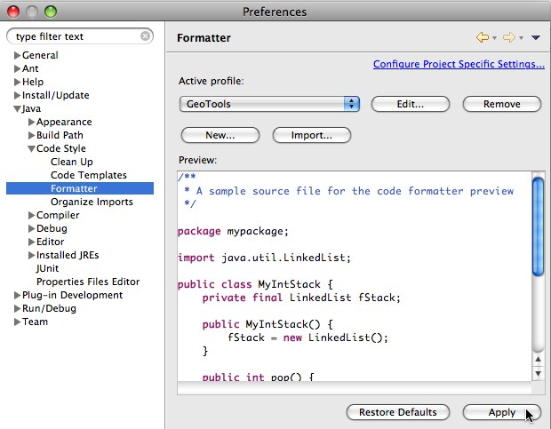
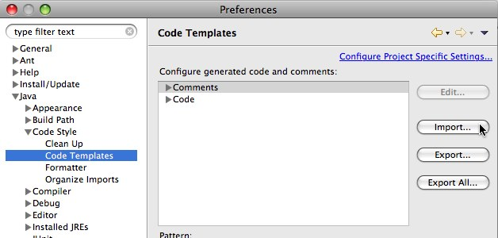
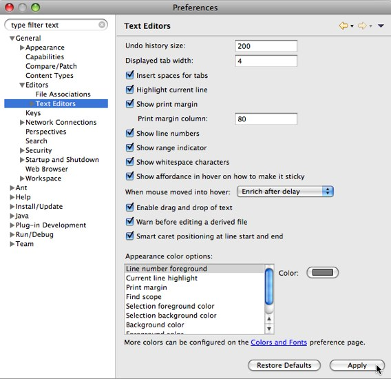

Eclipse Guide¶
A reference for developing GeoServer with Eclipse.
Importing modules¶
See the Eclipse section of the Maven Guide.
Running and debugging¶
Run or debug the class org.geoserver.web.Start in the web-app module. The steps to do so are detailed in the Quickstart.
Setting the data directory¶
If unset, GeoServer will default to the minimal directory inside of the web-app module for its data directory. To change this:
Open Debug Configurations... from the Eclipse menu
Select the Start configuration, select the Arguments panel and specify the -DGEOSERVER_DATA_DIR parameter, setting it to the absolute path of the data directory

Note
If you have checked out with git svn you may wish to use a symbolic in web/app correctly reference ‘’minimal’‘
Changing the default port for Jetty¶
If unset, Jetty will default to port 8080. To change this:
Open the Arguments panel of the Start configuration as described in the above section
Specify the -Djetty.port parameter, setting it to the desired port

Configuring JNDI resources in Jetty¶
JNDI resources such as data sources can be configured by supplying a Jetty server configuration file named in the system property jetty.config.file, specified as a VM argument in the Arguments panel of the launch configuration for Start. The path to the configuration file is relative to the root of the web-app module, in which the launch configuration runs. For example:
-Djetty.config.file=../../../../../settings/jetty.xml
The following Jetty server configuration file configures a JNDI data source jdbc/demo that is a connection pool for an Oracle database:
<?xml version="1.0"?>
<!DOCTYPE Configure PUBLIC "-//Mort Bay Consulting//DTD Configure//EN" "http://jetty.mortbay.org/configure.dtd">
<Configure class="org.mortbay.jetty.Server">
<New class="org.mortbay.jetty.plus.naming.Resource">
<Arg>jdbc/demo</Arg>
<Arg>
<New class="org.apache.commons.dbcp.BasicDataSource">
<Set name="driverClassName">oracle.jdbc.driver.OracleDriver</Set>
<Set name="url">jdbc:oracle:thin:@oracle.example.com:1521:demodb</Set>
<Set name="username">claudius</Set>
<Set name="password">s3cr3t</Set>
<Set name="maxActive">20</Set>
<Set name="maxIdle">10</Set>
<Set name="minIdle">0</Set>
<Set name="maxWait">10000</Set>
<Set name="minEvictableIdleTimeMillis">300000</Set>
<Set name="timeBetweenEvictionRunsMillis">300000</Set>
<Set name="numTestsPerEvictionRun">20</Set>
<Set name="poolPreparedStatements">true</Set>
<Set name="maxOpenPreparedStatements">100</Set>
<Set name="testOnBorrow">true</Set>
<Set name="validationQuery">SELECT SYSDATE FROM DUAL</Set>
</New>
</Arg>
</New>
</Configure>
Jetty does not mandate a reference-ref in GeoServer WEB-INF/web.xml, so there is no need to modify that file. No Jetty-specific information is required inside the GeoServer web-app module or data directory, so JNDI resources can be tested under Jetty for later deployment under Tomcat. See also the tutorial Setting up a JNDI connection pool with Tomcat in the GeoServer User Manual.
Eclipse preferences¶
Code formatting¶
Download http://svn.osgeo.org/geotools/trunk/build/eclipse/formatter.xml
Navigate to Java, Code Style, Formatter and click Import...
Select the formatter.xml file downloaded in step 1
Click Apply

Code templates¶
Download http://svn.osgeo.org/geotools/trunk/build/eclipse/codetemplates.xml
Navigate to Java, Code Style, Code Templates and click Import...
Select the codetemplates.xml file downloaded in step 1
Click Apply
Text editors¶
Navigate to General, Editors, Text Editors
Check Insert spaces for tabs
Check Show print margin and set Print margin column to “100”
Check Show line numbers
Check Show whitespace characters (optional)
Note
Showing whitespace characters can help insure that unecessary whitespace is not unintentionaly comitted.
Click Apply